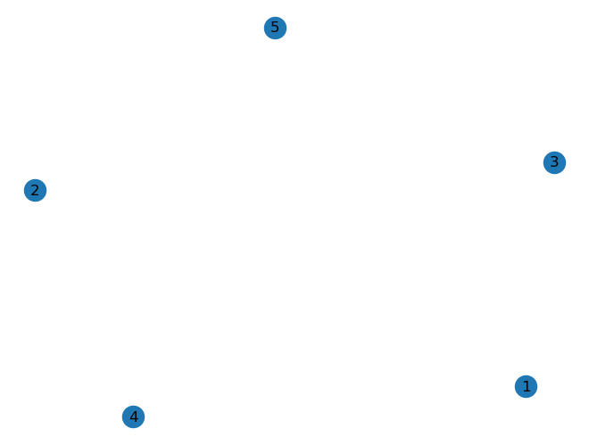
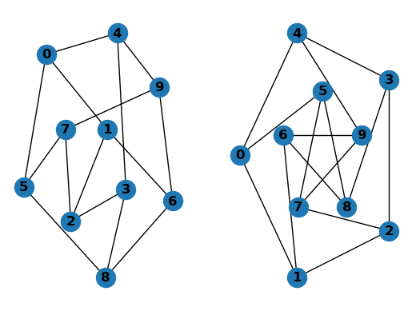
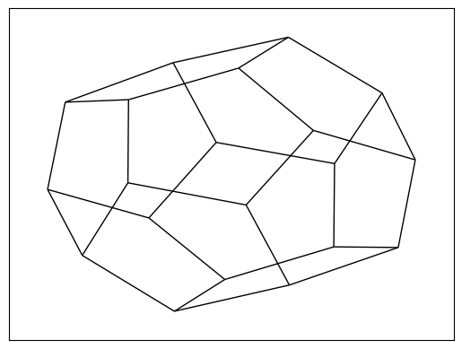
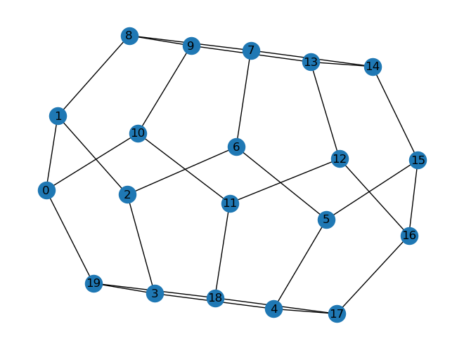
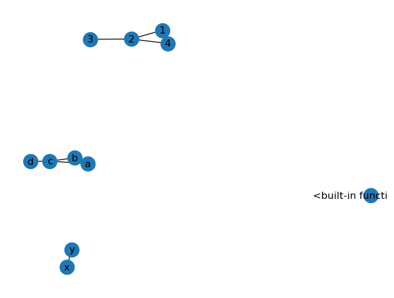
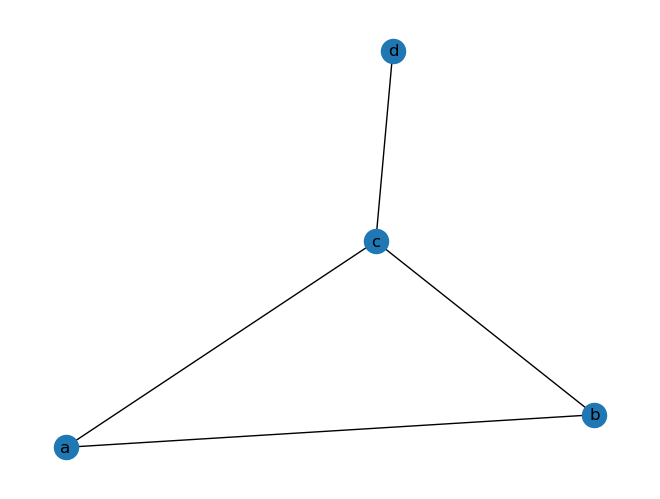

Show Code
import networkx as nx
print(nx.__version__)3.4.2There are two major section. First one is the static road network data processing. Second section is about analyzing the realtime traffic data
Reference - Reference of NetworkX - Source code of NetworkX on GitHub
You may find the networkx versions are different in the terminal and the jupyter notebook.
import networkx as nx
print(nx.__version__)3.4.2It is tricky for the different version of networkx, we are going to use the most recent one.
# !pip install networkx==3.2.1This tutorial focuses on spatial networks and learn how to construct a routable directed graph for Networkx and find shortest paths along the given street network based on travel times or distance by car. In addition, we will learn how to calculate travel times from a single source into all nodes in the graph.
import fiona
import os, os.path
import shapely
from shapely.geometry import Polygon, Point, shape
import networkx as nxG = nx.Graph()Nodes
The graph G can be grown in several ways. NetworkX includes many graph generator functions and facilities to read and write graphs in many formats. To get started though we’ll look at simple manipulations. You can add one node at a time,
G.add_node(1)or add nodes from any iterable container, such as a list
G.add_nodes_from([2, 3])add node with attribute
G.add_nodes_from([
(4, {"color": "red"}),
(5, {"color": "green"}),
])We can draw the graph,
nx.draw(G, with_labels = True)
Print all the nodes of a graph
G.nodesNodeView((1, 2, 3, 4, 5))To get the node data along with the nodes:
G.nodes[1], G.nodes[4]({}, {'color': 'red'})G.has_node(1)TrueWe can add edge to the graph
G.add_edge(1, 2)
e = (2, 3)
G.add_edge(*e) # unpack edge tuple*G.add_edges_from([(1, 2), (1, 3)])G.edgesEdgeView([(1, 2), (1, 3), (2, 3)])Check if the graph has the edge
G.has_edge(*(1,2))TrueG.has_edge(1, 2)TrueG.number_of_nodes()5G.number_of_edges()3We can examine the nodes and edges. Four basic graph properties facilitate reporting: G.nodes, G.edges, G.adj and G.degree. These are set-like views of the nodes, edges, neighbors (adjacencies), and degrees of nodes in a graph. They offer a continually updated read-only view into the graph structure. They are also dict-like in that you can look up node and edge data attributes via the views and iterate with data attributes using methods .items(), .data(). If you want a specific container type instead of a view, you can specify one. Here we use lists, though sets, dicts, tuples and other containers may be better in other contexts.
list(G.nodes)[1, 2, 3, 4, 5]list(G.edges)[(1, 2), (1, 3), (2, 3)]find the adjancent nodes of node 1
list(G.adj[1]) # or list(G.neighbors(1))[2, 3]G.degreeDegreeView({1: 2, 2: 2, 3: 2, 4: 0, 5: 0})# the number of edges incident to 1
G.degree[1]2The edge can have different attributes. For example, the road network the edge attribute can be the physical distance. For the social network, the edge attribute can be the relationships.
G.add_edge(1, 2, weight=4.7 )
G.add_edges_from([(3, 4), (4, 5)], color='red')
G.add_edges_from([(1, 2, {'color': 'blue'}), (2, 3, {'weight': 8})])
G[1][2]['weight'] = 4.7
G.edges[3, 4]['weight'] = 4.2list(G.edges)[(1, 2), (1, 3), (2, 3), (3, 4), (4, 5)]G.edges[3, 4]{'color': 'red', 'weight': 4.2}Let’s just create some simple graphs and the draw the edges
from matplotlib import pyplot as plt
G = nx.petersen_graph()
subax1 = plt.subplot(121)
nx.draw(G, with_labels=True, font_weight='bold')
subax2 = plt.subplot(122)
nx.draw_shell(G, nlist=[range(5, 10), range(5)], with_labels=True, font_weight='bold')
G = nx.dodecahedral_graph()
edges = nx.draw_networkx_edges(G, pos=nx.spring_layout(G))
G.add_edge(1, 2) # default edge data=1
G.add_edge(2, 3) # specify edge data
nx.draw(G, with_labels = True)
import math
G = nx.Graph()
G.add_edge('y', 'x', function=math.cos)
G.add_node(math.cos) # any hashable can be a nodeelist = [(1, 2), (2, 3), (1, 4), (4, 2)]
G.add_edges_from(elist)
elist = [('a', 'b', 5.0), ('b', 'c', 3.0), ('a', 'c', 1.0), ('c', 'd', 7.3)]
G.add_weighted_edges_from(elist)nx.draw(G, with_labels = True)
G = nx.Graph()
e = [('a', 'b', 0.3), ('b', 'c', 0.9), ('a', 'c', 0.5), ('c', 'd', 1.2)]
G.add_weighted_edges_from(e)nx.draw(G, with_labels = True)
print(nx.dijkstra_path(G, 'a', 'd'))['a', 'c', 'd']def edges_from_line(geom, attrs, simplify=True, geom_attrs=True):
"""
Generate edges for each line in geom
Written as a helper for read_shp
Parameters
----------
geom: ogr line geometry
To be converted into an edge or edges
attrs: dict
Attributes to be associated with all geoms
simplify: bool
If True, simplify the line as in read_shp
geom_attrs: bool
If True, add geom attributes to edge as in read_shp
Returns
-------
edges: generator of edges
each edge is a tuple of form
(node1_coord, node2_coord, attribute_dict)
suitable for expanding into a networkx Graph add_edge call
"""
try:
from osgeo import ogr
except ImportError:
raise ImportError("edges_from_line requires OGR: http://www.gdal.org/")
if geom.GetGeometryType() == ogr.wkbLineString:
if simplify:
edge_attrs = attrs.copy()
last = geom.GetPointCount() - 1
if geom_attrs:
edge_attrs["Wkb"] = geom.ExportToWkb()
edge_attrs["Wkt"] = geom.ExportToWkt()
edge_attrs["Json"] = geom.ExportToJson()
yield (geom.GetPoint_2D(0), geom.GetPoint_2D(last), edge_attrs)
else:
for i in range(0, geom.GetPointCount() - 1):
pt1 = geom.GetPoint_2D(i)
pt2 = geom.GetPoint_2D(i + 1)
edge_attrs = attrs.copy()
if geom_attrs:
segment = ogr.Geometry(ogr.wkbLineString)
segment.AddPoint_2D(pt1[0], pt1[1])
segment.AddPoint_2D(pt2[0], pt2[1])
edge_attrs["Wkb"] = segment.ExportToWkb()
edge_attrs["Wkt"] = segment.ExportToWkt()
edge_attrs["Json"] = segment.ExportToJson()
del segment
yield (pt1, pt2, edge_attrs)
elif geom.GetGeometryType() == ogr.wkbMultiLineString:
for i in range(geom.GetGeometryCount()):
geom_i = geom.GetGeometryRef(i)
for edge in edges_from_line(geom_i, attrs, simplify, geom_attrs):
yield edge
def read_shp(path, simplify=True, geom_attrs=True, strict=True):
"""Generates a networkx.DiGraph from shapefiles. Point geometries are
translated into nodes, lines into edges. Coordinate tuples are used as
keys. Attributes are preserved, line geometries are simplified into start
and end coordinates. Accepts a single shapefile or directory of many
shapefiles.
"The Esri Shapefile or simply a shapefile is a popular geospatial vector
data format for geographic information systems software [1]_."
Parameters
----------
path : file or string
File, directory, or filename to read.
simplify: bool
If True, simplify line geometries to start and end coordinates.
If False, and line feature geometry has multiple segments, the
non-geometric attributes for that feature will be repeated for each
edge comprising that feature.
geom_attrs: bool
If True, include the Wkb, Wkt and Json geometry attributes with
each edge.
NOTE: if these attributes are available, write_shp will use them
to write the geometry. If nodes store the underlying coordinates for
the edge geometry as well (as they do when they are read via
this method) and they change, your geomety will be out of sync.
strict: bool
If True, raise NetworkXError when feature geometry is missing or
GeometryType is not supported.
If False, silently ignore missing or unsupported geometry in features.
Returns
-------
G : NetworkX graph
Raises
------
ImportError
If ogr module is not available.
RuntimeError
If file cannot be open or read.
NetworkXError
If strict=True and feature is missing geometry or GeometryType is
not supported.
Examples
--------
>>> G=nx.read_shp('test.shp') # doctest: +SKIP
References
----------
.. [1] https://en.wikipedia.org/wiki/Shapefile
"""
try:
from osgeo import ogr
except ImportError:
raise ImportError("read_shp requires OGR: http://www.gdal.org/")
if not isinstance(path, str):
return
net = nx.DiGraph()
shp = ogr.Open(path)
if shp is None:
raise RuntimeError("Unable to open {}".format(path))
for lyr in shp:
fields = [x.GetName() for x in lyr.schema]
for f in lyr:
g = f.geometry()
if g is None:
if strict:
raise nx.NetworkXError("Bad data: feature missing geometry")
else:
continue
flddata = [f.GetField(f.GetFieldIndex(x)) for x in fields]
attributes = dict(zip(fields, flddata))
attributes["ShpName"] = lyr.GetName()
# Note: Using layer level geometry type
if g.GetGeometryType() == ogr.wkbPoint:
net.add_node((g.GetPoint_2D(0)), **attributes)
elif g.GetGeometryType() in (ogr.wkbLineString,
ogr.wkbMultiLineString):
for edge in edges_from_line(g, attributes, simplify,
geom_attrs):
e1, e2, attr = edge
net.add_edge(e1, e2)
net[e1][e2].update(attr)
else:
if strict:
raise nx.NetworkXError("GeometryType {} not supported".
format(g.GetGeometryType()))
return netimport os, os.path
import fiona
from shapely.geometry import shape
def connected_component_subgraphs(G):
for c in nx.connected_components(G):
yield G.subgraph(c)
## Using Networkx2.3 or earlier version
def getNetworkGraph(segments,segmentlengths):
"""
Builds a networkx graph from the network file, inluding segment length taken from arcpy.
It selects the largest connected component of the network (to prevent errors from routing between unconnected parts)
"""
import networkx as nx
#generate the full network path for GDAL to be able to read the file
path = segments # use absolute root
print (path)
if os.path.exists(path):
g = read_shp(path)
#This selects the largest connected component of the graph
#sg = list(nx.connected_component_subgraphs(g.to_undirected()))[0] #before version 2.3
sg = list(connected_component_subgraphs(g.to_undirected()))[0] ## new version
print ("graph size (excluding unconnected parts): "+str(len(g)))
# Get the length for each road segment and append it as an attribute to the edges in the graph.
for n0, n1 in sg.edges():
oid = sg[n0][n1]["objectid"] #osm_id
sg[n0][n1]['length'] = segmentlengths[oid]
sg[n0][n1]['fid'] = oid
# print(sg)
return sg
else:
print ("network file not found on path: "+path)
def getSegmentInfo(segments):
"""
Builds a dictionary for looking up endpoints of network segments (needed only
because networkx graph identifies edges by nodes)
"""
# import os, os.path
# import fiona
# from shapely.geometry import shape, mapping
if os.path.exists(segments):
endpoints = {}
segmentlengths = {}
street_lyr = fiona.open(streetMap, 'r')
for idx, feat in enumerate(street_lyr):
geom = feat['geometry']
coord = geom['coordinates']
feat_id = feat['properties']['objectid'] #osm_id
length = shape(geom).length
if idx % 10000 == 0: print('The osmid and length are:', idx, feat_id, length)
# first point and the last point
endpoints[feat_id] = ((coord[0][0], coord[0][1]), (coord[-1][0], coord[-1][1]))
segmentlengths[feat_id] = length
print ("Number of segments: "+ str(len(endpoints)))
return (endpoints, segmentlengths)
else:
print ("segment file does not exist!")
def buildNetwork(segments):
#build network graph (graph, endpoints, lengths) and get segment info
r = getSegmentInfo(segments)
endpoints = r[0]
lengths = r[1]
graph = getNetworkGraph(segments,lengths)
return [endpoints, lengths, graph]We can create the graph from the shapefile. You can download the sidewalk shapefile from here.
streetMap = 'data/sidewalk.shp'
[endpoints, lengths, graph] = buildNetwork(streetMap)Here we use two endpoints of the sidewalk graph as the origin and destination.
s1_point = (2674629.019778946, 233887.42317315526)
s2_point = (2676819.994840707, 233998.8937345071)
#Compute a shortest path (using segment length) on graph where segment endpoints are nodes and segments are (undirected) edges
if graph.has_node(s1_point) and graph.has_node(s2_point):
dist = nx.shortest_path_length(graph, s1_point, s2_point, weight='length')
path = nx.shortest_path(graph, s1_point, s2_point, weight='length')dist, path(2239.187257781493,
[(2674629.019778946, 233887.42317315526),
(2675063.484593347, 233895.2384052628),
(2675115.2077349196, 233892.43677666123),
(2675131.3505460056, 233892.1815988601),
(2675157.64553571, 233891.76624855347),
(2675194.6822983907, 233894.80562187612),
(2675558.573598633, 233899.59502712416),
(2675613.0183556173, 233905.90717337467),
(2675630.2018974577, 233911.72542009607),
(2675651.2510666423, 233903.49926487225),
(2675728.5513929822, 233904.42103680802),
(2675735.165564337, 233913.50363536438),
(2675973.666402716, 233913.2098672439),
(2676051.848300272, 233914.85865282876),
(2676233.1438519773, 233925.74859682945),
(2676240.7664461, 233911.12548257585),
(2676257.4528208617, 233898.6908843843),
(2676265.9243400875, 233894.33221573415),
(2676308.2581279846, 233915.78094614836),
(2676310.4227480562, 233924.97806112084),
(2676809.520503303, 234003.31260332352),
(2676819.994840707, 233998.8937345071)])#Compute a shortest path (using segment length) on graph where segment endpoints are nodes and segments are (undirected) edges
if graph.has_node(s1_point) and graph.has_node(s2_point):
dist = nx.shortest_path_length(graph, s1_point, s2_point, weight='length')
path = nx.shortest_path(graph, s1_point, s2_point, weight='length')
#get path edges
path_edges = zip(path,path[1:])
#print "edges: "+str(path_edges)
subpath = []
# get object ids for path edges
for e in path_edges:
oid = graph[e[0]][e[1]]["objectid"]
subpath.append(oid)
print ("oid path:"+str(subpath))oid path:[67, 101354, 153614, 136348, 99194, 119948, 83281, 112093, 158108, 91137, 180777, 175219, 80366, 179855, 155287, 99997, 115588, 75881, 177392, 125590, 163167]for idx, node in enumerate(graph.nodes):
if idx >10: continue
print(node)(2674629.019778946, 233887.42317315526)
(2675063.484593347, 233895.2384052628)
(2677370.9139951007, 234099.03786372015)
(2677331.098267104, 234139.85190359864)
(2676819.994840707, 233998.8937345071)
(2676874.8400247567, 234004.04994090827)
(2677398.8984584543, 234090.96045311925)
(2677452.6642256537, 234098.92121608992)
(2677418.0230016173, 234179.81781638178)
(2677382.3291674173, 234191.45753613432)
(2676893.9161705, 233916.11122627818)s1_point = (2675063.484593347, 233895.2384052628)
s2_point = (2688743.6504137763, 232314.04444539145)graph.has_node(s1_point)Truegraph.has_node(s2_point)Truedist = nx.shortest_path_length(graph, s1_point, s2_point, weight='length')
path = nx.shortest_path(graph, s1_point, s2_point, weight='length')dist16415.891881111354path[(2675063.484593347, 233895.2384052628),
(2675115.2077349196, 233892.43677666123),
(2675131.3505460056, 233892.1815988601),
(2675157.64553571, 233891.76624855347),
(2675194.6822983907, 233894.80562187612),
(2675558.573598633, 233899.59502712416),
(2675613.0183556173, 233905.90717337467),
(2675630.2018974577, 233911.72542009607),
(2675651.2510666423, 233903.49926487225),
(2675728.5513929822, 233904.42103680802),
(2675735.165564337, 233913.50363536438),
(2675973.666402716, 233913.2098672439),
(2676051.848300272, 233914.85865282876),
(2676233.1438519773, 233925.74859682945),
(2676240.7664461, 233911.12548257585),
(2676257.4528208617, 233898.6908843843),
(2676265.9243400875, 233894.33221573415),
(2676308.2581279846, 233915.78094614836),
(2676310.4227480562, 233924.97806112084),
(2676809.520503303, 234003.31260332352),
(2676819.994840707, 233998.8937345071),
(2676874.8400247567, 234004.04994090827),
(2676874.064745394, 234014.15348545252),
(2676957.813333418, 234023.46448996506),
(2677007.2955817403, 234029.95908470638),
(2677370.9139951007, 234099.03786372015),
(2677398.8984584543, 234090.96045311925),
(2677452.6642256537, 234098.92121608992),
(2677454.941419613, 234111.02728595326),
(2677907.0137035456, 234185.17733252712),
(2677932.2420339272, 234242.0282067263),
(2677941.3842299017, 234255.36684626815),
(2677990.141920403, 234261.8616053579),
(2678005.2040250394, 234254.34261407817),
(2678527.927399018, 234343.59434335225),
(2678534.8443517126, 234353.0832785276),
(2678575.5627107075, 234361.6010977371),
(2678585.3282965315, 234353.83500047328),
(2678846.310453198, 234397.02691518224),
(2678887.2252412294, 234403.8263951464),
(2679088.0142569984, 234445.11230064248),
(2679084.916992422, 234463.0033843295),
(2679110.9364222256, 234503.63877807587),
(2679119.031203387, 234508.44703937852),
(2679161.630812761, 234506.2541478733),
(2679167.725321452, 234500.00931735014),
(2679411.514545877, 234502.76658634288),
(2679444.6865912573, 234505.75490665063),
(2679457.7385895746, 234501.22096371316),
(2679670.8238325035, 234537.05839798946),
(2679691.223058482, 234549.1421311993),
(2679735.7623356427, 234554.34492353565),
(2679753.333471439, 234550.81966564266),
(2679877.025557437, 234576.12110668348),
(2680168.239846406, 234628.83797003972),
(2680208.733640359, 234636.4052490283),
(2680216.8301490014, 234630.23136584464),
(2680723.5722291935, 234748.62329798038),
(2680727.7798782215, 234752.85957966626),
(2680769.5750580714, 234766.45033323587),
(2680774.52217293, 234763.60728424237),
(2681152.802792656, 234847.33014804224),
(2681302.687449447, 234856.50998220246),
(2681306.6252149055, 234863.98715456706),
(2681357.123331068, 234865.32915489745),
(2681362.210264231, 234861.15897282277),
(2681692.1215955643, 234886.4181370486),
(2681699.355624311, 234894.39671735794),
(2681736.5442193267, 234895.59133949786),
(2681745.715213006, 234890.37457753514),
(2682066.7968359203, 234915.0260280753),
(2682333.112356359, 234935.90829843114),
(2682348.7610627725, 234942.76536287944),
(2682387.0749724396, 234943.90924178105),
(2682392.96649399, 234940.45891116298),
(2682967.788370863, 234978.88946004419),
(2682995.7552366946, 234973.75627360333),
(2683002.1594804395, 234959.65170422112),
(2683371.526776604, 234850.29003378446),
(2683448.666176682, 235097.16829136465),
(2683497.606516197, 235395.38814054022),
(2683530.8800540864, 235392.1465222744),
(2683574.2342847297, 235388.95462271638),
(2683589.7387387, 235402.76356023492),
(2684083.5089586717, 235346.60231169572),
(2684635.3308200566, 235277.55478697235),
(2685373.557770412, 235172.01081611312),
(2685383.0665468746, 235164.64807134375),
(2685418.501619694, 235156.4882973923),
(2685425.213920341, 235161.03703511806),
(2685593.112400591, 235134.0114814397),
(2685597.1667276775, 235127.75097808542),
(2685647.637742642, 235112.5096627914),
(2685663.546551098, 235114.8701428145),
(2686191.5867158985, 234645.771882989),
(2686195.8975672983, 234628.9907206273),
(2686228.4587320555, 234597.17336507412),
(2686248.6786997677, 234595.83923046888),
(2686742.151375865, 234166.48874183433),
(2686761.5286288843, 234131.61591230836),
(2686805.809617109, 234090.8638000553),
(2686852.0284037506, 234073.57574945263),
(2687182.643957702, 233780.50315164228),
(2687354.7748588067, 233669.4651945763),
(2687379.7572525633, 233661.7946223563),
(2687400.235589389, 233662.99080785774),
(2687742.9475660105, 233614.50791171848),
(2687751.196016693, 233597.2696205356),
(2687802.298103555, 233589.14866995855),
(2687810.2430023956, 233610.0165433152),
(2687935.76011087, 233591.8050653929),
(2687898.219488951, 233311.907332479),
(2687916.218319036, 233309.81716483322),
(2688047.540972163, 233291.80922577917),
(2688065.902964053, 233289.07701865683),
(2688204.129894759, 233270.86976774325),
(2688225.311872064, 233268.41684603435),
(2688710.8177772593, 233200.5747280974),
(2688709.904579304, 233167.68030699),
(2688713.21728898, 233165.75554342783),
(2688744.986548535, 233161.97593939138),
(2688749.0910898466, 233163.85052149036),
(2688768.992373024, 233161.15889029673),
(2688773.1297168243, 233155.87251426547),
(2688824.3337859195, 233146.27006329867),
(2688861.746836447, 233144.54630401186),
(2688838.4949222845, 232998.77472394655),
(2688835.4173997133, 232978.89330074197),
(2688819.8523215735, 232835.94391950782),
(2688806.3193665748, 232828.05758166913),
(2688803.239877881, 232797.72623907388),
(2688812.8167634537, 232786.2595300599),
(2688797.5320008136, 232723.42268666055),
(2688796.2936263853, 232714.0122307466),
(2688772.4540506476, 232539.2425137284),
(2688770.3982452843, 232529.83159415305),
(2688768.163860336, 232464.2878029931),
(2688760.476848694, 232457.2906648712),
(2688757.6035582, 232426.01925449946),
(2688761.358278947, 232419.1750672862),
(2688751.714564611, 232370.7019925957),
(2688750.164769101, 232360.17349556973),
(2688748.699462584, 232348.2935739961),
(2688743.6504137763, 232314.04444539145)]We have the path, we can create the shapefile based on the path.
layer = fiona.open(streetMap)
crs = layer.crs
# schema = layer.schemaschema = {'properties': {
'fid': 'str'
},
'geometry': 'LineString'
}from shapely.geometry import shape, mapping
from shapely.geometry import LineString, Point
with fiona.open('outname.shp', 'w', crs = crs, driver='ESRI Shapefile', schema = schema) as out:
for i in range(len(path) - 1):
node1 = path[i]
node2 = path[i+1]
line = LineString((Point(node1), Point(node2)))
feat = {
'geometry': mapping(line),
'properties':
{'fid': i}
}
out.write(feat)You may wonder, what if the origin and destination node are not in the graph. How do we calculate the shortest distance and find the shortest path? We can snap those points to the nearest nodes in the graph. The following scripts can help you find the nearest node of any input point.
we can loop and see all the ndoes
for idx, node in enumerate(graph.nodes):
if idx >10: continue
print(node)(2674629.019778946, 233887.42317315526)
(2675063.484593347, 233895.2384052628)
(2677370.9139951007, 234099.03786372015)
(2677331.098267104, 234139.85190359864)
(2676819.994840707, 233998.8937345071)
(2676874.8400247567, 234004.04994090827)
(2677398.8984584543, 234090.96045311925)
(2677452.6642256537, 234098.92121608992)
(2677418.0230016173, 234179.81781638178)
(2677382.3291674173, 234191.45753613432)
(2676893.9161705, 233916.11122627818)Numpy is very efficient for indexing and computing, we going to turn the coordinates of nodes into numpy arrays.
import numpy as np
nodelist = list(graph.nodes)
node_array = np.array(nodelist)node_array.shape(88516, 2)node_array[0,:]array([2674629.01977895, 233887.42317316])Specify any point with x, and y in the study area
anypnt = (2675067.484593347, 233893.2384052628)calculate the absolute difference of the anypoint to all the nodes in the graph
abs_diff = np.abs(anypnt - node_array)abs_diff.shape(88516, 2)we will sum the x, and y for each node.
abs_diff_sum = np.sum(abs_diff, 1)
abs_diff_sum.shape(88516,)we can easily find the index of the minimum value
index = abs_diff_sum.argmin()
index1we can find the coordinate of the nearest node
nodelist[1](2675063.484593347, 233895.2384052628)anypnt(2675067.484593347, 233893.2384052628)